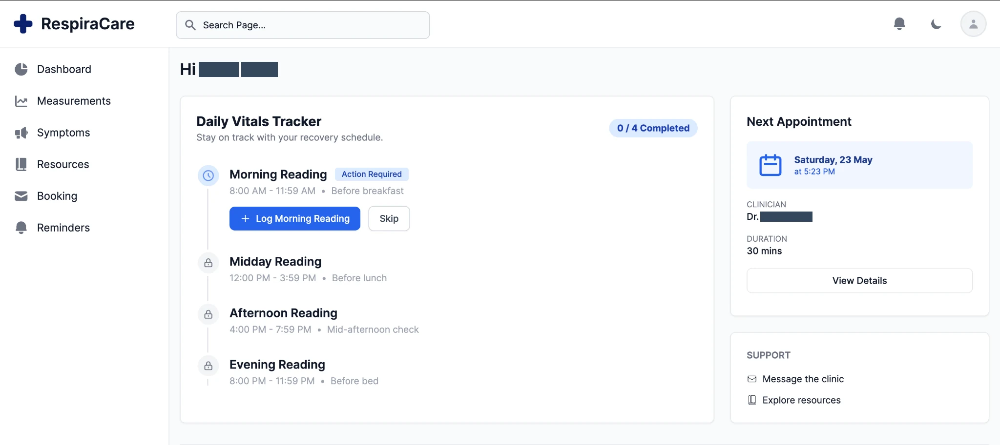
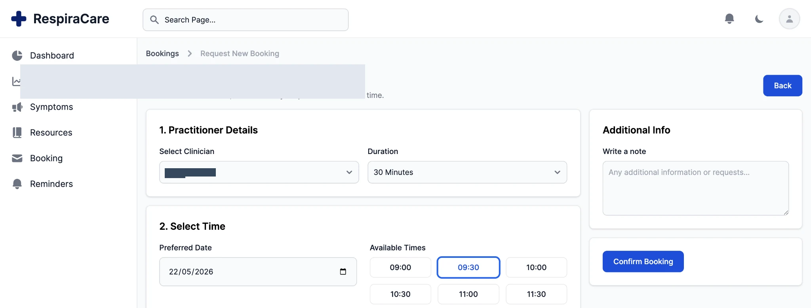
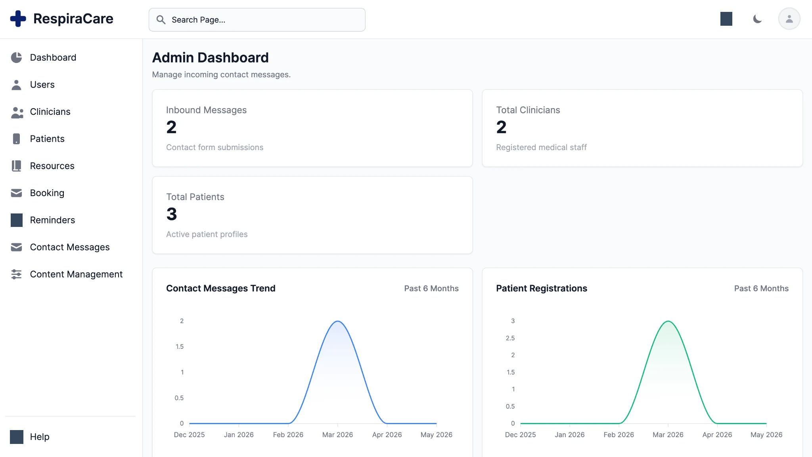

Team healthcare project · Monash IE · Team 188 · 2026
RespiraCare Online
A role-based platform supporting patient health logging, clinical review and appointment coordination.
- My role / scope
- Team project evidence. The supplied documents do not establish my individual ownership of each feature or deliverable.
- Evidence to inspect
- Workflow summary, documented test scope and an explicit acceptance-state review.
- Context
- Historical team documentation; not a live clinical service or a clinical-safety claim.
Follow the patient-to-clinician journey.
Three documented tasks, visualised as a patient-to-clinician journey. Switch stages to inspect what each person needs.
Documentation-derived illustration · fictional sample measurements · selected original screenshots appear below.
Mon · Tue · Wed · Thu · Fri — fictional values, not guidance or clinical assessment.
Measurements across five entries
This view illustrates the information flow; it does not calculate clinical risk or claim that access policies were independently verified.
Request → review → decision
The existing role-based booking simulator directly below lets you accept a fictional request and see that state across three roles.
Source boundary: historical Team 188 UserDoc/TechDoc and documented workflows. This is a new explanatory illustration, not a production screenshot, clinical service, or evidence of personal ownership of every module.
Original project evidence
Connect the walkthrough to the actual system.
Selected historical UserDoc screens show the interface behind the illustrated workflow. Identifying text remains redacted.


Enlarge originalHistorical patient dashboard showing daily logging and appointment context. Identifying text is redacted; values belong to the captured test state.


Enlarge originalThe documented booking form captures clinician, duration, date and a time slot. This is a team-system screen, not a claim of sole feature authorship.


Enlarge originalThe administrative view connects operational messages and registered accounts. Historical counts are not current adoption or healthcare outcome measures.

Workflow simulation · fictional records
One request, different responsibilities.
Switch roles, accept the sample request, then see the shared state update.
My appointment request
Review the state of the request you submitted.
- Patient
- Sample patient
- Clinician
- Sample clinician
- Time
- Example time slot
- Status
- Pending
The fictional request is waiting for a clinician decision.
New portfolio simulation of the documented workflow. No login, backend, patient data or real appointment is involved. The controls do not establish production authorisation or client acceptance.
The connected workflow
| Role | Documented task | Information needed |
|---|---|---|
| Patient | Request an appointment; review status; submit measurements. | Own booking and health-record context. |
| Clinician | Review assigned requests and accept or decline. | Relevant patient and appointment information. |
| Administrator | Manage accounts, bookings, resources and website content. | Operational overview and controlled administrative actions. |
Review the evidence before claiming acceptance
The supplied internal test document contains 45 case rows: 42 marked Pass and 3 Pass with note. Those are historical team-recorded results, not tests rerun for this portfolio. The UAT document has blank result and client sign-off fields, so client acceptance is not claimed.
Earlier planning mentions AI navigation; the final TechDoc and Run Sheet exclude the AI companion from the current build. Security controls described in prose require implementation evidence before they can be treated as verified.
Why this case is included
This case shows the team’s healthcare workflow and the distinction between documentation, test execution and client approval. Selected original screenshots are shown above; the complete dictionary and handover artefacts remain in the restricted evidence collection. Specific individual feature ownership is not asserted without contribution records.
Continue the conversation
Want to discuss the decisions?
I can walk through the evidence and explain the boundaries of my contribution.